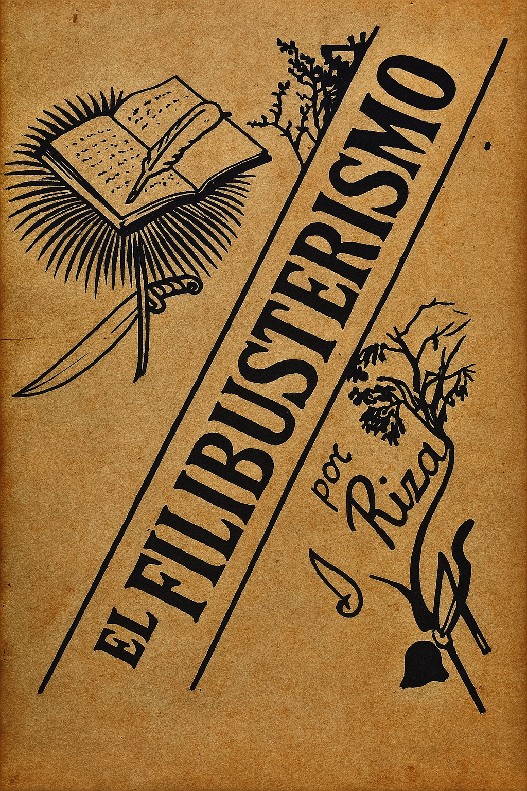
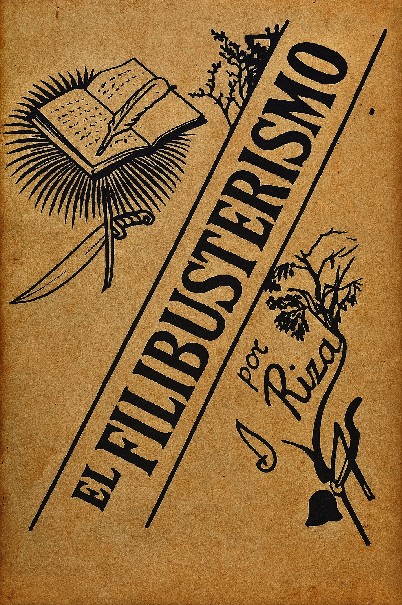

Works
El Filibusterismo
Noli Me Tangere
.png)
José Protasio Rizal Mercado y Alonso Realonda was a Filipino nationalist, polymath, reformist writer and physician whose novels Noli Me Tángere and El Filibusterismo exposed Spanish colonial injustices and helped spark the Philippine nationalist movement
More information about Dr. Jose RizalThe "First National Hero"
Jose Protacio Rizal Mercado y Alonzo Realonda was a Filipino nationalist, writer, and revolutionary during the Spanish colonial era. Born on June 19, 1861, in Calamba, Laguna, he is best remembered for his role in advocating for peaceful reforms rather than violent revolution. Rizal wrote the novels Noli Me Tangere and El Filibusterismo, which exposed the abuses of the Spanish clergy and government. Through his works, he inspired Filipinos to seek justice and equality. He was executed by the Spanish on December 30, 1896, in Luneta, Manila, making him a martyr and the Philippine national hero.
• Born on June 19, 1861 in Calamba, Laguna.
• Full name: José Protacio Rizal Mercado y Alonzo Realonda.
• Recognized as the National Hero of the Philippines.
• Wrote "Noli Me Tangere" and "El Filibusterismo" exposing Spanish abuses.
• Advocated for peaceful reforms, education, and equal rights.
• Studied in the Philippines and Europe, finishing medicine and philosophy.
• Mastered multiple languages and used his intellect to fight injustice.
• Exiled in Dapitan and later executed on December 30, 1896 in Luneta.
• His works inspired the Philippine Revolution.
Rizal's famous works
El Filibusterismo
Noli Me Tangere
By Bookmark.inc
🇵🇭 Rizal teaches us to love and serve our country.
✍️ He reminds us that education is a powerful tool for change.
🕊️ He showed that peaceful reform is better than violence.
💡 He encourages us to think critically and stand for truth.
👥 He believed that the youth have the power to shape the future.
Learn more about the people who shaped the life of our national hero.
Click HereJose Rizal wanted to change the government in a peaceful way and did not support fighting or war. He believed that people could make things better by doing their duties as citizens, learning, and following the law. He dreamed of a free Philippines where everyone is treated fairly and their rights are respected by a good and honest government.
Rizal emphasized the importance of embracing Filipino identity. He encouraged pride in native language, traditions, and culture as a way to strengthen national unity and preserve the soul of the nation against colonial erasure.
Rizal favored leaders to be elected based on merit and integrity, not on privilege or coercion. He supported non-violent action and citizen involvement to build an equitable society.
He believed Filipino language and culture are central to our identity and resistance against colonization. Through writing and art, Rizal inspired pride and progress while questioning outdated traditions. Rizal believed that education was the key to empowerment and equality for everyone. He appreciated the capacities of women and considered that peace among communities would be followed by national development.
He strongly supported equality, justice, and education as pillars of national progress. In works like Noli Me Tangere and El Filibusterismo, Rizal exposed colonial abuses and urged the empowerment of Filipinos through learning and critical thought.
"La juventud es la esperanza de nuestra patria."
"The youth is the hope of our nation."
— José Rizal
This website was created as a project about Dr. Jose Rizal.